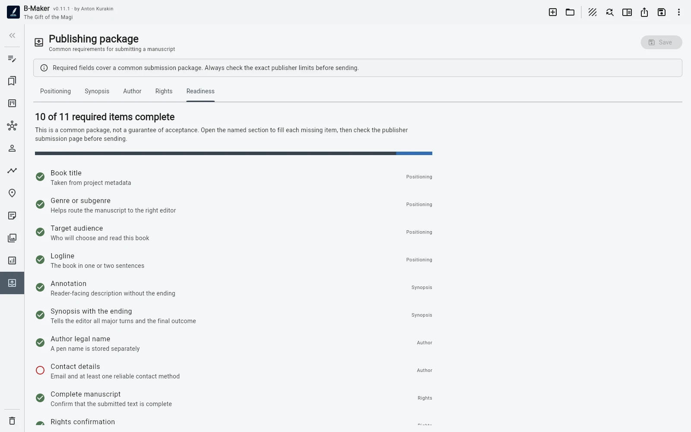

A recipient may need the manuscript plus positioning, blurb, synopsis or proposal, author information, rights information, declarations, and a correctly prepared export.
These materials belong to the book, but not inside the book
A synopsis should not become Chapter 0. An author bio should not live in the research folder just because there is nowhere else to put it. Publishing material has its own lifecycle.
Keeping it in the project preserves context
The blurb may change after the positioning changes. The synopsis may need to match the current manuscript. Rights and AI-use information belong to the same submission state. Scattering these across files recreates the document pile B-Maker is trying to avoid.
A readiness checklist solves memory, not publishing
It cannot tell you whether an editor will accept the book. It can tell you that a required field is still empty, a declaration is missing, or the package is mechanically incomplete.

The principle
Publishing is not a separate project created after writing. It is a later state of the same project.